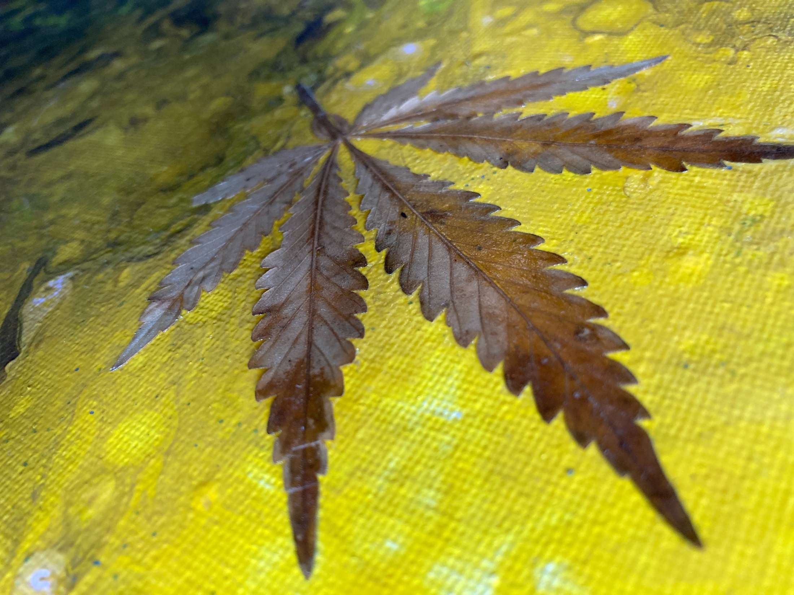
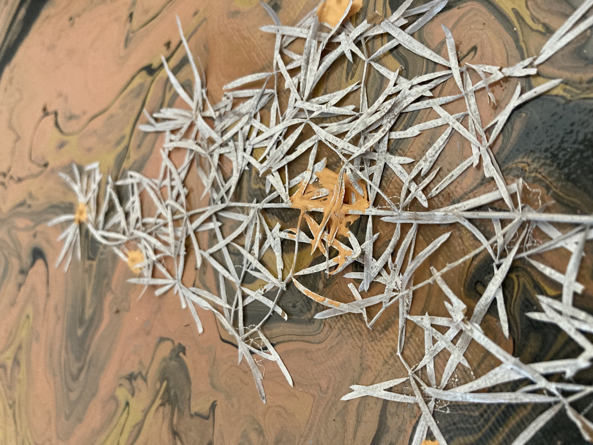
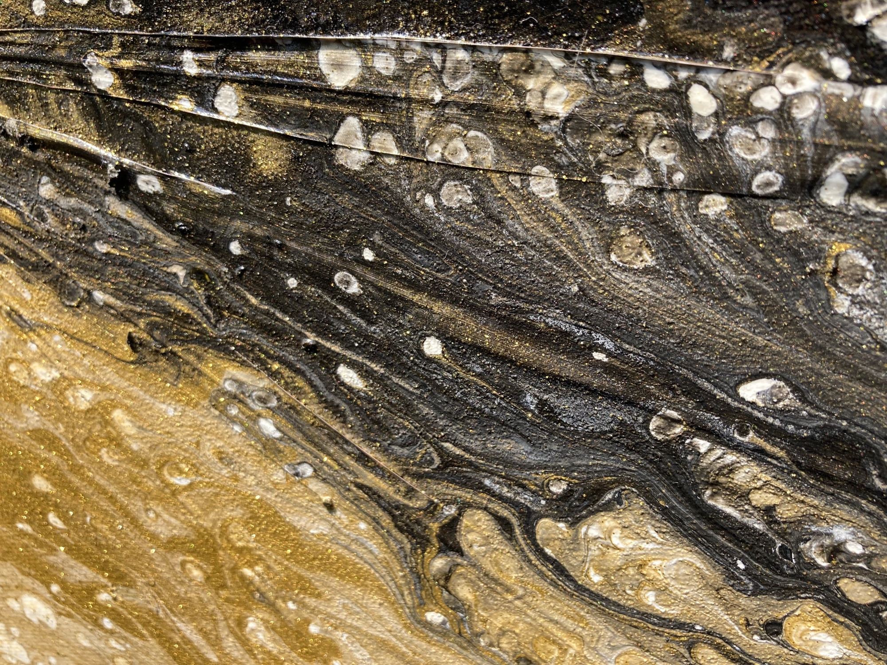
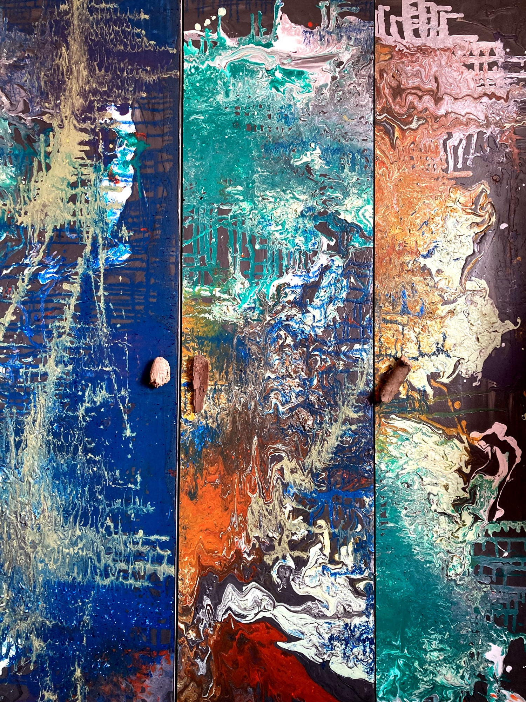
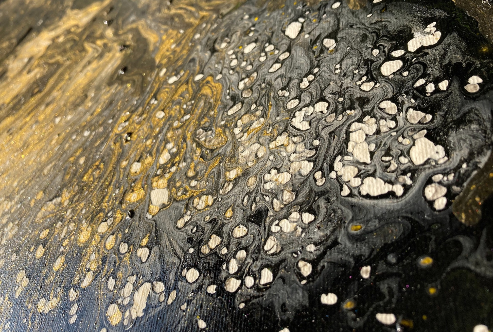
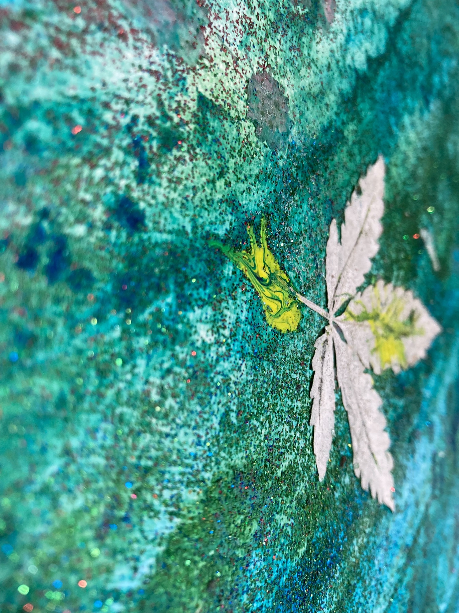

{kind=link}


Abstraction becomes a physical language: pigment, embedded fragments, and shifting fields of darkness gather into atmospheres that feel both unsettled and composed. Each work holds movement in suspension, inviting the eye to read texture as memory, pressure, and emotional weather.
Featured Artworks
Statement works for quiet rooms and powerful spaces.


Image Gallery
Close surfaces, layered marks, and material atmosphere.
A curated sequence of additional works and details selected for texture, movement, and architectural mood.
{kind=link}

Surface Study I A close reading of black, gold, and mineral movement.{kind=link}

Surface Study II Fine organic structure held against a quiet grey field. Surface Study III
Raw fibers and shadowed pigment create a tactile relief.
Surface Study III
Raw fibers and shadowed pigment create a tactile relief.
{kind=link}

Surface Study IV Linear fragments drift across a deep earth-toned ground.{kind=link}

Surface Study V Blue, gold, and carved material meet in a dense color field.{kind=link}

Surface Study VI An intimate vertical composition of pressure, texture, and light. Surface Study VII
Dark atmospheric marks suspended over a quiet canvas plane.
Surface Study VII
Dark atmospheric marks suspended over a quiet canvas plane.
 Surface Study VIII
A controlled metallic surface with depth and quiet abrasion.
Surface Study VIII
A controlled metallic surface with depth and quiet abrasion.
About
Material works with architectural presence.
Danny Hirsch creates contemporary abstract works that operate between painting, surface, and object. Built through layers of pigment, organic impressions, and controlled disruption, the pieces carry a sense of depth that changes with distance and light.
Their scale and atmosphere make them natural companions to modern interiors: private residences, hospitality spaces, architectural projects, and collections seeking work with emotional weight rather than decoration.